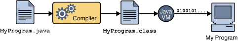

¿Por qué?
- Para entender cómo funciona java sin la "magia" de netbeans
En windows 7
Ir a
Start -> Computer -> System Properties -> Advanced system settings -> Environment Variables -> System variables -> PATHBuscar en
C:\Program Files\Javael jdk, digamos que tuviera el nombrejdk1.6.0_23. En éste, buscar la carpetabin.- Ahora tenemos una ruta como
C:\Program Files\Java\jdk1.6.0_23\bin - Agregar, al principio de la variable
PATH,sin borrar nada, la ruta de arriba seguida de un punto y coma:C:\Program Files\Java\jdk1.6.0_23\bin; - Para otros windows: http://introcs.cs.princeton.edu/15inout/windows-cmd.html
Probándolo
C:\Users\username>java -version
java version "1.6.0_23"
Java(TM) 2 Runtime Environment, Standard Edition (build 1.6.0_23-b07)
Java HotSpot(TM) Client VM (build 1.6.0_23-b13, mixed mode, sharing)
C:\Users\username>javac -version
javac 1.6.0_23
/*escribir esto en el archivo Hello.java
en la misma carpeta donde estábamos arriba*/
public class Hello{
public static void main(String[] args){
System.out.println("Hello world!");
}
}C:\Users\username> javac Hello.java
C:\Users\username> java Hello
Hello World!
Cómo funciona java
El proceso general
- Tomás un archivo fuente (
.java) - Lo compilás y se genera bytecode (
.class) - La JVM interpreta el bytecode, buscando objetos con los cuales interactuar
- Si ejecutás una clase que tiene un método
main, es un programa principal


Los archivos fuente
//en Promedio.java
public class Promedio{
public static int calcularPromedio(int[] nums){
int sum = 0;
for(int n: nums)
sum += n;
return sum/nums.length;
}
public static void main(String[] args){
int[] elems = {5,1,12,6,8};
System.out.println(calcularPromedio(elems));
}
}Sobre las clases
- Los archivos fuente tienen la definición de una clase pública
- Un archivo
.javatiene una clase pública con el mismo nombre - Una clase es el concepto de un objeto.
- La clase (general) o sus instancias (copias específicas) son dueñas de métodos.
- Un método
staticle pertenece a una clase directamente
$ dir
Promedio.java
$ javac Promedio.java
$ dir
Promedio.java
Promedio.classLa compilación
- Cuando ejecutás
javac Archivo.java, creás un archivo de bytecode - Que tiene instrucciones que la JVM entiende
- Por cada clase de objetos habrá un archivo
.class
$ java Promedio
6.4La máquina virtual
- La máquina virtual agarra el bytecode y lo interpreta
- Cuando le das el nombre de una clase, le pregunta a ese concepto si sabe cómo responder a
main - Si la clase sabe, decimos que es un punto de entrada y se ejecuta lo que esté ahí
- Si no sabe (no lo tiene definido), es una clase que debería ser usada por otras.
- En otras palabras: en el mundo de java sólo existen las clases.
Programas en java
- En java, usás instancias de clases para programar, siempre hay objetos interactuando con otros
- A veces interactuás con una clase directamente (como
Math), y a veces con instancias (como objetosScanner) - Pero siempre, siempre, una función le pertenecerá a un objeto; por eso se llaman métodos
- De modo que, en realidad, para hacer algo útil vas a tener que hacer que objetos se pasen mensajes entre sí
- Una clase es el concepto general para construir objetos específicos
Interacción con la línea de comandos
- Para ejecutar un programa de java escribís
java NombreDeClase - Si has usado la línea de comandos, verás que un programa puede recibir "parámetros"
cd C:\Users- En java, el usuario puede enviarle parámetros al main de un programa:
java ElPrograma param1 param2- Los separás por espacios
¿Cómo recibir parámetros de la línea de comandos?
- Te acordás de la firma de
main? public static void main(String[] args)- Así es:
argses un arreglo con cada parámetro - de modo que:
java ElPrograma param1 param2=>{"param1", "param2"} - y:
java ElPrograma "param con espacios" param=>{"param con espacios", "param"}
//Args.java
public class Args{
public static void main(String[] args){
for(String param: args)
System.out.printf("El parámetro: %s \n",
param);
}
}C:\Users\username> javac Args.java
C:\Users\username> java Args hola progra2 "tengo espacios"
hola
progra2
tengo espacios
Ejercicios
- Recibir cualquier cantidad de enteros de la línea de comandos y encontrar el mayor y el menor
- Recibir cualquier cantidad de Strings de la línea de comandos
y convertirlas a
Title Case(cada palabra con mayúscula).
Convenciones de código
Nombres
- Las clases siempre van en
UpperCamelCase - Los métodos y variables, en
lowerCamelCase - Las constantes en
SCREAMING_SNAKE_CASE
Bloques
- Las llaves en la misma línea donde se abre el bloque:
if(algo){ - El contenido de un bloque indentado cuatro espacios (o un tab)
Aprovechar las condiciones booleanas
boolean x;
if(x == true){
//esto está mal
}
if(x){
//esto está bien
}//Esta función está mal
public static boolean f(String debeSerLarga){
boolean x = debeSerLarga.length() > 10;
if(x == true)
return true;
else
return false;
}//Esta función está bien:
public static boolean f(String debeSerLarga){
return debeSerLarga.length() > 10;
}Aprovechar el operador ternario:
//esto está mal
int x;
if(algunaCondicion()){
x = 2;
}else{
x = 3;
}//esto está bien
int x = algunaCondicion() ? 2 : 3;- Más convenciones acá: http://www.oracle.com/technetwork/java/codeconventions-150003.pdf